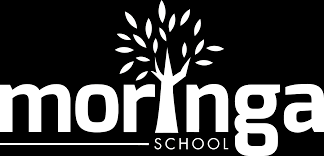
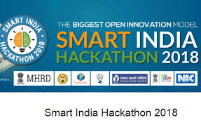

TECHNOLOGY
NAIROBI INNOVATION WEEK
Nairobi innovation week is an annual event ment to bring together global technology industry players and leaders to promote innovation,growth and industrialization in local and regional economy.

Our goals are to strenghen the
relationship between startups and investors,expose innovations to consumers.
APLLLICATION SECURITY HACKATHON
Computer geeks are you ready!.
This an application security testing hackathon that will involve
testing of Web/mobile applications to identify vulnerabilities that attackers can leverage.The event will be guided by application and
penetration testing experts from Servianu Limitedis .

Great opportunity for participants to test their security skills.
NAIROBI TECH WEEK
Its BACK! and BIGGER! than ever!.

This year we bring you developer workshops from indusry leadersa facebook backathon powered by Angel Hack and a full day of industry chats for you to excel to the next level.
Attendance to this years Nairobi Tech Week is FREE!.
DESIGN,IOT AND BOOTCAMP
FOONDI WORKSHOPS will be organising a one week design AI(artificial intelligence) and Internet Of Things(IOT) bootcamp in collaboration with IBM,IOT research lab,Strathmore, Ilab and The Mekatilili Program.
VENUE:Strathmore university
DATE:15th-19th JAN
TIME:8:30AM-4:30PM